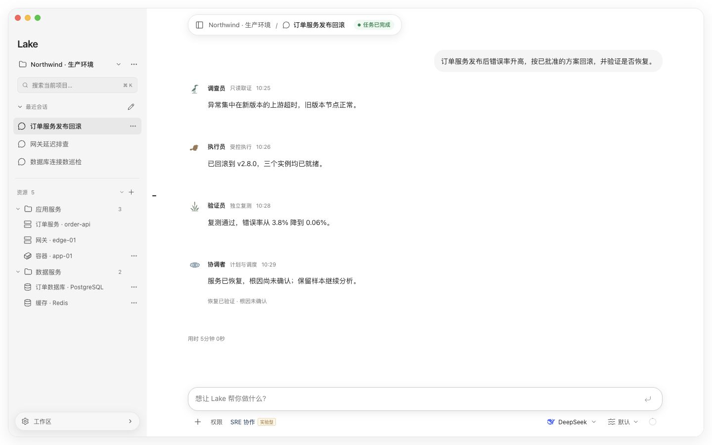

SRE 协作路径AI 协作
运维目标
Lake AI
协调者
调查员
执行员
验证员
协同排障
协调、调查、执行与验证，专员围绕同一个目标按需分工。
[lake]
context = "resource-aware"
actions = "permission-bound"
mode = "sre-collaboration"Lake 将模型、工具与资源连接起来，让主机、数据库、Redis、Docker、MCP 与 Skills 融入熟悉的运维工作流。
专为资源上下文、协作排障与可追溯执行打造的 AI 运维工作台
Lake AI
协调者
协调、调查、执行与验证，专员围绕同一个目标按需分工。
[lake]
context = "resource-aware"
actions = "permission-bound"
mode = "sre-collaboration"查看目标、影响与操作确认，在会话授权范围内执行。
trust资源、会话与终端同屏，通过 MCP 和 Skills 扩展能力。
scale支持 macOS 与 Windows，从连接模型和资源开始。
dx采用 Apache 2.0 许可证，开放构建，模型由你选择。
ossAI按项目组织资源，让 AI 理解当前任务所处的环境。
MCP / Skills在对话中通过 @ 引用资源、Skills 与 MCP。
SSH / SQL连接主机、数据库、Redis 与 Docker。
灵活扩展连接你选择的模型，也可通过 Magpie Agent 接入。
围绕真实运维任务，连接资源、组织协作、保留执行与验证证据。
按项目组织主机、数据库、Redis 与 Docker。资源、会话和终端处于同一个工作台，使用 @ 引用资源，让 AI 结合实际环境理解任务。
将资源上下文、操作确认、执行记录与独立验证连接起来，让一次运维任务在同一个工作台内推进。
Lake 将资源上下文、AI 工具调用与实验性 SRE 专员协作连接起来，帮助你从问题出发，有序完成调查、执行与验证。

plan + verify按项目开启实验性 SRE 协作，由协调者、调查员、执行员与验证员按需分工。计划跟进依赖，调查保留证据，执行遵循权限，验证员重新采样核对结果。
资源工作台
connect + work下载客户端，连接自己的模型，按项目添加主机与关联资源。在对话中描述问题，结合资源、终端和工具推进工作，需要时随时人工接管。
SRE 协作为实验性功能，默认关闭，按项目开启。操作遵循会话权限；工具成功不等于业务恢复，结果不明的变更不会自动重放。
从快速开始到专员协作，阅读 Lake 的使用说明、安装文档与开发指南。
通过 GitHub 与 Lake 项目交流，反馈使用体验、问题或功能建议。
告诉我们你的使用场景、排障需求与功能建议，一起完善 Lake。